基于leveldb的单机二级索引¶
代码仓库：https://github.com/tom6m6/LevelDB.Final
10225501460 林子骥 10211900416 郭夏辉
main分支下有报告，final分支和main分支是一样的，是最基础的实现。
final_nowait分支是进阶实现，在createindex的过程中无阻塞的写入数据。
1.项目概述¶
背景与目标¶
LevelDB自身有着一些缺陷，LevelDB 是一个高性能的键值存储引擎，但其基础功能主要集中在简单的键值存储和范围查询上，对于非key字段只能遍历整个SSTable实现。此外，LSM树是为块设备设计的并针对写性能进行了优化的，对于需要高搜索性能的二级索引来说，它不是胜任的数据结构。首先，由于二级索引通常只存储主键而不是完整的记录作为值，因此二级索引中的KV对很小。其次，辅助键不是唯一的，并且可以具有多个相关联的主键。LSM-树的错位写入模式会将这些非连续到达的值（即相关联的主键）分散到不同级别的多个片段中。因此，查询操作需要搜索基于LSM的二级索引中的所有级别以获取这些值片段。
现有的实现方式：TIDB有对二级索引的创建与维护进行代码的开源。不过其由于是分布式系统，数据的一致性性是依靠于事务的处理，会进行多次的log维护。在本次单机实验中是可以忽略的。
本项目通过扩展 LevelDB，解决以下功能需求：
- 字段存储与查询： 在 Value 中添加字段功能，使 Value 能够包含多个字段，支持通过字段值查询键（类似关系型数据库的列查询）。
- 二级索引： 为特定字段创建二级索引，提升查询效率。
- 性能测试： 通过 Benchmark 测试，分析功能优化对系统性能的影响。
2.功能设计¶
2.1字段设计¶
不像TIDB中，KV数据库只作为存储节点，其元数据有专门的数据点存储。
本次实验的leveldb对于用户输入的字段值，字段名字段数量，字段能否为空等元信息，在真正获取到具体数据前，都是未知的。
因此，需要特意的存储所有元数据，作为一个key的value部分。
```
字段设计
// field_num(32位变长) | index_num(32位变长) | fields
// fields: field1_name_len | field1_name | field1_val_len | field1_val |
// field2_name_len | field2_name | field2_val_len | field2_val |.....
```
uint64_t MultiDB::SerializeValue(const FieldArray &fields, std::string &res_) {
PutVarint32(&res_, fields.size());
for(const auto& field : fields){
PutLengthPrefixedSlice(&res_, field.first); // 索引字段名
PutLengthPrefixedSlice(&res_, field.second); // 索引字段值
}
return 0;
}
2.2根据字段查询值。¶
根据字段查询所对应的key值，如果该字段已经建立索引，则走索引查询(下面会讲到)；若无，则需要遍历整个lsm-tree.
这里我们需要调用DB的NewIterator构造，这个iter为我们提供了扫描整个数据库的可能。并且，它会自动跳过所有已经delete掉的值。
此外，我们所查询的应该是此时此刻的数据，因此为了避免新输入的数据会删除掉原有数据，(防止delete时，触发gc，然后删除之前的数据)，对它建立一个快照，在查询结束后，释放快照。
Status MultiDB::Get_keys_by_field(const ReadOptions &options, const Field& field, std::vector<std::string> *keys) {
for(const auto &item_pair : index_db_mp_){
if(item_pair.first == field.first.ToString()){
*keys= QueryByIndex(options,field);
return Status();
}
}
MutexLock l(&mutex_);
auto snaphot = main_db_->GetSnapshot();
auto it=main_db_->NewIterator(options);
mutex_.Unlock();
it->SeekToFirst();
keys->clear();
while(it->Valid()){
auto val=it->value();//value format: field_num|field1_len|field_val|field2_len|field2_val
FieldArray arr;
auto str_val=std::string(val.data(),val.size());
ParseValue(str_val,&arr);
for(auto pr:arr){
if(pr.first==field.first&&pr.second==field.second){
Slice key=it->key();
keys->emplace_back(key.data(),key.size());
break;
}
}
it->Next();
}
main_db_->ReleaseSnapshot(snaphot);
delete it;
return Status::OK();
}
2.3二级索引设计¶
-
设计目标：对某个字段建立索引，提高对该字段的查询效率。同时尽量保持其写入性能。
-
实现思路：提供多个lsm-tree来存储数据，命名为maindb和indexdbes.其中，maindb用来存储原始数据，也就是key和SerializeValue(fields).metadb用来存储元数据相关内容，保证索引的持久化。
- 实现细节：接下来我将从索引字段设计，单线程读写，gc过程，多线程读写，数据一致性和数据恢复这几个方面介绍。
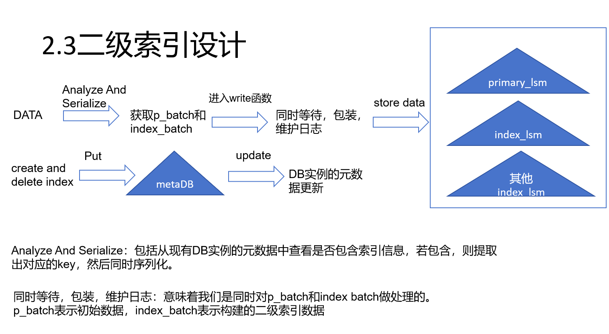
2.3.0与之前设计文档的比较¶
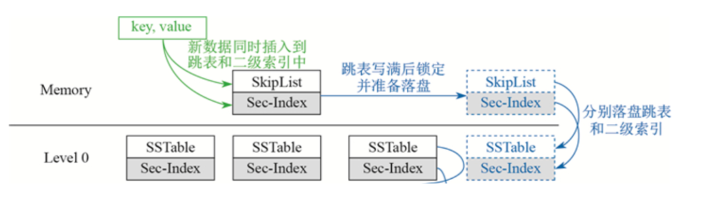
我们原先的打算是，在memtable中维护本地索引，然后在memtable刷盘的时候，该部分也刷盘，这样的好处是，很容易仅仅通过一次log写，保证数据的一致性。看上去比我们为两者分别写log文件要快很多。
当我们index对应的memtable是写满后才刷盘的。可以假设主键对应的数据字节长度是我们index key对应的字节长度的10倍，10次可以写满一个主memtable。也就是说，对于相同的数据量，我们的index的开销是，10次维护log的IO以及一次刷盘IO。而本地索引则是，10次刷盘IO。后者相当于少了一次IO。
但是，我们需要考虑两者的潜在性能差，我们会在序列化value的同时，序列化index对应的key，而这种方法在刷盘时还需要再次序列化一次，这种增加了cpu的cache miss。另一种情况则是，本地索引这种方法会使得level0的文件数量变得很大，就很容易触发compact操作(写放大)，同时当level0过多时，还会使线程进入睡眠状态。
2.3.1总体框架¶
namespace leveldb {
enum DBStatus{
None,
CreatingIndex,
DeletingIndex,
Done
};
class LEVELDB_EXPORT MultiDB:leveldb::DB {
public:
// Constructor: initializes the main database and index databases.
//。。。功能函数，包含leveldb原有的代码
private:
Options op_;
FileLock* db_lock_;
std::string db_name_;
DBImpl *main_db_; // The main DB storing primary keys
DBImpl *meta_db_;
//dbimpl的模仿
port::Mutex mutex_;
std::deque<Writer*> writers_ GUARDED_BY(mutex_);
std::deque<Writer*> tmp_writers GUARDED_BY(mutex_);
std::deque<Writer*> pending_list_ GUARDED_BY(mutex_);
MultiWriteBatch* tmp_batch_ GUARDED_BY(mutex_);
DBStatus db_status_ GUARDED_BY(mutex_);
bool is_creating_index_ GUARDED_BY(mutex_);
//index锁
//std::vector<std::string> index_list_;
port::RWLock meta_lock_;//在这里新增了读写锁，具体代码路径在util/port_stdcxx.h
std::vector<std::string> new_index_field_ GUARDED_BY(meta_lock_);
std::unordered_map<std::string, DBImpl*> index_db_mp_ GUARDED_BY(meta_lock_);
};
}
mutex用于实际写入。meta_lock_用于与index相关的元数据的写入和读取。由于leveldb不支持c++17版本，因此我们自己写了一个读写锁的实现。
这样设计的目的，
1.解耦合相关代码，方便处理createindex和数据写入等并发关系。
2.同时将所有写操作都交由writers队列处理，而不是每一个leveldb的writer队列单独处理。那为什么要这么做？
这是为了保证数据的一致性。我们在每一个leveldb单独处理的条件下假设一个场景，此时索引已经建立，有大量数据插入，每一个leveldb都会通过BuildWriteGraph来获得一个batch，但是，每一个batch的数据量是有限的。因此就会导致，在一次写入时，写入的数据量是不一致的，从而导致数据不一致。在通过二级索引查找时，就很容易出现Not Found的情况。
而这种情况，对于我们的惰性删除是致命的(即对于delete key操作，不马上删除其对应的索引数据，而是在查找验证失败后(main数据库的值已经删除)，才删除对应索引数据），因为它验证失败仅仅可能是由于，其对应的数据还在writers队列，没有写入数据库中。
2.3.2索引key值设计¶
/**
* @param key ：primary key
* @param val ：索引字段对应的值
* @param composed_key val_len|val|p_key
*/
void BuildComposedKey(const Slice &key,const Slice &val,std::string* composed_key){
PutLengthPrefixedSlice(composed_key,val);
composed_key->append(key.data(),key.size());
}
设计理由：我们期望存储的lsm-tree按照我们的如下期望排序，在memtable、filemeta以及sstable中，比较方式按照，先比较val值的大小，若相等，则继续比较key值的大小，若再相等，则比较sequence。这样就能保证全部有序，这样子就可以很方便的查询，一旦在查询的过程中，出现val不相同的情况，那么就可以马上退出。
而之所要还要比较key的大小，是为了方便数据存放和gc过程。如果不比较，就会产生一种情况，一个SSTable内部数据有序，两个SStable之间不一定有序。我们可以假设一个场景，现在有文件f1
如果只比较value，那么就有可能在memtable刷盘的时候，会认为memtable与文件f1没有重叠，就会放在同一层，生成f2文件。然后在删除的时候，由于构建的是twoLevel迭代器，就会导致在遍历完f1后，发现f2的首个index值_primary值和要删除的值不同，就会停止在该层继续遍历。但实际上，f2内也有可能存在要删除的数据。
查找的正确性保证：我们所构建的DBIter，对于level1等高层，也是构建twoLevel迭代器，倘若要删除的数据和Delete数据，在迭代器中是不相邻的，那很容易读到已经被删除的值。
2.3.3写操作¶
所有程序写都只能调用该接口。
Status MultiDB::Put_with_fields(const WriteOptions &options, const Slice &key, const FieldArray &fields) {
//index插入
ReadLockGuard l(&meta_lock_);//加读锁
//meta_lock_.ReadLock();
std::unordered_set<int> match;
//....从indexdb_map中获取主要数据
//meta_lock_.ReadUnlock();
Status s;
MultiWriteBatch multi_batch;
for(auto &idx_pos : match){
//item entry: <index positon in fields,>
std::string composed_key;
BuildComposedKey(key,fields[idx_pos].second,&composed_key);
//const Slice s = Slice();
multi_batch.Put(composed_key,Slice(),fields[idx_pos].first.ToString());
//s = index_db_mp_[fields[idx_pos].first.ToString()]->Put(options,composed_key,Slice());
}
//主lsm-tree插入
std::string value;
SerializeValue(fields,value);//TODO 在serialLize时，获得composedKey
//Status s_main = main_db_->Put(options,key,value);
return Write(options,&multi_batch);//writer后释放meta_write lock
}
enum BatchStatus{
Norm,
ForIndexEntryDelete,
ForIndexCreate,
};
class LEVELDB_EXPORT MultiWriteBatch {
public:
// class LEVELDB_EXPORT Handler {
// public:
// virtual ~Handler();
// virtual void Put(const Slice& key, const Slice& value) = 0;
// virtual void Delete(const Slice& key) = 0;
// };
MultiWriteBatch();
// Intentionally copyable.
MultiWriteBatch(const MultiWriteBatch&) = default;
MultiWriteBatch& operator=(const MultiWriteBatch&) = default;
~MultiWriteBatch();
// Store the mapping "key->value" in the database.
void Put(const Slice& key, const Slice& value,const std::string &index_name);
// If the database contains a mapping for "key", erase it. Else do nothing.
void Delete(const Slice& key,const std::string &index_name);
//........其余功能与writerBatch类似
private:
friend class MultiWriteBatchInternal;
friend class WriteBatch;
friend class MultiDB;
BatchStatus s;
WriteBatch * main_batch;
std::unordered_map<std::string,WriteBatch *> index_batch_map_;
};
这里通过读写锁保护索引的创建和读取。然后我们这里还引进了一个新的MultiWriteBatch对象，然后与普通batch不同的是，他这里会有多个batch，会提前将索引写入与主数据写入数据分离，为之后的并发写入memtable提供可能。此外，因为要同时维护两者的log日志，导致需要提前解析出两者具体的内容。同时，读写锁的构造，为在建立索引时，也允许数据库继续读取数据提供了可能。
接下来我们来看Write流程，主要是为了两个lsm-tree的数据一致性，整体功能DBImpl的类似。
不同点在于，我们这里需要同时维护所有数据库的version和log文件。
Status MultiDB::Write(const WriteOptions &options, MultiWriteBatch *updates) {
Writer w(&mutex_);//与leveldb的mutex相比，这里的mutex锁的是与多数据库相关的所有信息。
w.batch = updates;
w.sync = options.sync;
w.done = false;
//只能在这里完成composed_key的重构
MutexLock l(&mutex_);
//MutexLock main_l(&main_db_->mutex_);
writers_.push_back(&w);
while (!w.done && &w != writers_.front()) {
w.cv.Wait();
}
if (w.done) {
return w.status;
}
Status s;
MutexLock main_l(&main_db_->mutex_);
// May temporarily unlock and wait.
s = MakeRoomForWrite(updates);
std::unordered_map<std::string, std::uint64_t> idx_last_sequence_map;
uint64_t main_last_sequence = main_db_->versions_->LastSequence();
idx_last_sequence_map["main"] = main_last_sequence;
for (auto &index_db_pair: this->index_db_mp_) {
auto db_impl = index_db_pair.second;
uint64_t index_last_sequence = db_impl->versions_->LastSequence();
idx_last_sequence_map[index_db_pair.first] = index_last_sequence;
}
Writer *last_writer = &w;
assert(s.ok());
if (s.ok() && updates != nullptr) { // nullptr batch is for compactions
MultiWriteBatch *write_batch = BuildBatchGroup(&last_writer);//用自己重新写的BuildBatchGroup，需要返回多个write_batch,对应其index_db
WriteBatchInternal::SetSequence(write_batch->main_batch, main_last_sequence + 1);
auto count = MultiWriteBatchInternal::Count(write_batch);//有时候main为空
idx_last_sequence_map["main"] += count;//这里可以维护seq的一致性
for (auto &index_batch_pair: write_batch->index_batch_map_) {
WriteBatchInternal::SetSequence(index_batch_pair.second,
idx_last_sequence_map[index_batch_pair.first] + 1);
idx_last_sequence_map[index_batch_pair.first] += count;
}
// MultiWriteBatchInternal::SetSequence(write_batch, last_sequence + 1);//
// last_sequence += MultiWriteBatchInternal::Count(write_batch);
// Add to log and apply to memtable. We can release the lock
// during this phase since &w is currently responsible for logging
// and protects against concurrent loggers and concurrent writes
// into mem_.
{
mutex_.Unlock();
main_db_->mutex_.Unlock();
s = AddRecord(write_batch);//维护所有db的log
bool sync_error = false;
if (s.ok() && options.sync) {
s = main_db_->logfile_->Sync();
if (!s.ok()) {
sync_error = true;
} else {
for (auto &index_db_pair: this->index_db_mp_) {
s = index_db_pair.second->logfile_->Sync();
if (!s.ok()) {
sync_error = true;
}
}
}
//判断status全部ok
}
assert(s.ok());
if (s.ok()) {
InsertIntoMultiDB(write_batch);
}
main_db_->mutex_.Lock();
mutex_.Lock();
if (sync_error) {
// The state of the log file is indeterminate: the log record we
// just added may or may not show up when the DB is re-opened.
// So we force the DB into a mode where all future writes fail.
//修改为所有数据库都会出现该错误
RecordBackgroundError(s);
}
if (write_batch == tmp_batch_) tmp_batch_->Clear();
SetLastSeqForAllDB(idx_last_sequence_map);
}
//std::deque<Writer*> *current_queue = &writers_;
while (true) {
Writer *ready = writers_.front();
writers_.pop_front();
if (ready != &w) {
ready->status = s;
ready->done = true;
ready->cv.Signal();
}
if (ready == last_writer) break;
}
// Notify new head of write queue
if (!writers_.empty()) {
writers_.front()->cv.Signal();
}
return s;
}
}
Write函数的流程概括来说如下所示：
1.进入我们定义的新writer_队列,等待批量写
2.MakeRoomForWrite，确保index-tree和p-tree都有空间写数据
3.维护index和primary tree的版本号
4.得到批量数据multi_batch，
5.维护index和primary tree的log
6.写入对应的memtable文件
7.返回并且跟新writers队列
重写write函数的原因：
•因为本实验没有事务机制来保证主数据与索引数据的一致性。如果还使用leveldb自带的put和write，会出现下述错误。
•在高并发的情况下，主数据和索引数据都先写入各自的writer队列中，通过BuildGraph函数来获得一个含有较多数据的batch。但是因为索引数据会远小于主数据，因此会出现有大量索引数据已经写入数据库，但主数据还没有log持久化的情况。同时因为锁的竞争，无法保证主数据与索引数据是否会在同一批次中写入，这是不符合原子性的。
2.3.4读操作¶
QueryByIndex:因为要读取元数据，因此要加读锁。在这里，我们会通过GetRawResult来获取可能的结果值，然后到maindb中验证该值是否存在。需要注意的是，整个读取的过程是无锁操作，在GetRawResult时，会对maindb创建一个快照，并且获取对应的版本号到new_op内，这样就可以保证在验证时，不会被新加入的数据所干扰。然后对于要删除的值(即验证失败的值)，打包成batch加快处理，并将BatchStatus设置为ForIndexEntryDelete。
设计原因：实际上我们也可以在delete primary key时，从主lsm-tree中查看对应的字段值，然后往index lsm-tree中插入delete记录，但这样子会大大阻塞写的性能。而现在index lsm-tree的delete只在未命中时发生，并且以批处理的形式更新，速度会更快。相比前者，只会轻微的牺牲一些读性能。
std::vector<std::string> MultiDB::QueryByIndex(const ReadOptions &options, const Field &field) {
std::unordered_set<std::string> tmp_res;
ReadOptions new_op = options;
ReadLockGuard read_guard(&meta_lock_);
this->GetRawResult(new_op,field,tmp_res);
std::vector<std::string> res;
MultiWriteBatch multi_batch;
for (const auto& key : tmp_res) {
std::string value;
auto get_s = this->main_db_->Get(new_op,key,&value);
assert(get_s.ok() || get_s.IsNotFound());
if(!get_s.IsNotFound() || Validate(value,field)){
res.push_back(key);
}else{
std::string composed_key;
BuildComposedKey(key,field.second,&composed_key);
multi_batch.Delete(composed_key,field.first.ToString());
}
}
this->main_db_->ReleaseSnapshot(new_op.snapshot);
multi_batch.s = BatchStatus::ForIndexEntryDelete;
if(!multi_batch.index_batch_map_.empty()){
auto status = Write(WriteOptions(),&multi_batch);
if(!status.ok()){
assert(0);
return std::vector<std::string>();
}
}
return res;
}
void MultiDB::GetRawResult(ReadOptions &options, const Field &field, std::unordered_set<std::string> &tmp_res){
auto index_db = index_db_mp_[field.first.ToString()];
Status s;
MutexLock l(&mutex_);
auto iter = index_db->NewIterator(ReadOptions());//index_db的相关写都会由mutex_控制
options.snapshot = main_db_->GetSnapshot();
//这里还需要获得main_db的sequence
mutex_.Unlock();
std::string lkey;
PutLengthPrefixedSlice(&lkey,field.second);
iter->Seek(lkey);//输入应该是val_len|val|user_key,其中user_key为None
//iter->SeekToFirst();
for (; iter->Valid(); iter->Next())
//。。。获取对应值
delete iter;
}
2.3.5Index创建¶
首先我们要考虑的是，在index创建这个时间点，其数据由哪几部分组成。
我们可以假设有一个场景是，在插入大量数据的过程中，我们开始createIndex，获取mutex锁。此时有四种数据。一是已经存在在maindb的数据，二是已经存在在writer函数中writers队列内的batch的数据，但还没有写入leveldb；三是正在写入memtable内的数据；四是接下来put操作内新写入的数据。
这里我们为了保证数据能够全部有序插入，通过写锁来保证，注意这里获取写锁的前提，是读锁全部释放。因此当获取写锁时，能够保证Write函数内的所有数据已经写入到db中了。然后接下来就只剩下maindb内的数据已经Put的新数据需要处理。
这里put时需要获取读锁，会被当前写锁所阻塞。因此我们现在也只需要处理maindb内的数据。同时我们要注意这里我们也对maindb取了一个快照，这是为了不阻塞与正在创建的index字段无关的数据，可以继续写入maindb当中。
Status MultiDB::CreateIndexOnField(const std::string &field_name) {
//meta_lock_.WriteLock();
WriteLockGuard l_meta(&meta_lock_);//写锁
is_new = true;
MutexLock l(&mutex_);
Options op = op_;
op.index_mode = true;//标志该数据库为indexdb
//op.abandon_log = true;
Status status;
DB *field_tmp_db;
status = DB::Open(op, db_name_ + "/index_" + field_name , &field_tmp_db);//若mainDB已经打开，则无需Open
auto field_db_impl = static_cast<DBImpl *>(field_tmp_db);
index_db_mp_[field_name] = field_db_impl;
//。。。。。元数据持久化。。。。。
ReadOptions read_op;
read_op.snapshot = main_db_->GetSnapshot();//保证该快照内的数据不会被main_db gc掉，读取不超过该seq的数据到index_db中，支持无锁并发
//已经这里获得快照时会获取到锁
auto it=main_db_->NewIterator(read_op);
mutex_.Unlock();//现在保证了接下来的最新数据可以继续解析
MultiWriteBatch index_batch;
index_batch.s = BatchStatus::ForIndexCreate;
it->SeekToFirst();
//-------------------------------------------------------------------------------遍历main数据库
std::string composed_key;
while(it->Valid()){
//...........遍历maindb，将结果都放入index_batch
it->Next();
}
delete it;
main_db_->ReleaseSnapshot(read_op.snapshot);
//把index_batch依次放入tmp_writer队列，然后该队列还会放入正在写入的
status = Write(WriteOptions(),&index_batch);
//..........元数据存储
return status;
}
然后我们再来看它的元数据存储过程，它将存储到数据库的IndexStatus::CreateIndex,代表正在创建数据库。然后当写入完成后，告诉数据操作已经完成。
值得注意到时，这里是一个小批量操作，用于删除之前的数据以及记录当前数据库状态，保证其原子操作，方便接下来的数据恢复。
enum IndexStatus{
CreateIndex,
DeleteIndex,
DoneCreate,
DoneDelete
};
/**
*
* @param s
* @param index_name
* @param result s（32位）|index_name
*/
static void PackageIndexStatus(IndexStatus s,const std::string &index_name,std::string *result){
result->clear();
PutFixed32(result,s);
result->append(index_name);
}
//...............打开indexdb
//元数据持久化
std::string meta_key_create;
PackageIndexStatus(IndexStatus::CreateIndex,field_name,&meta_key_create);
meta_db_->Put(WriteOptions(),meta_key_create,Slice());
//遍历maindb..................,写入indexdb
//元数据持久化
std::string meta_key_done;
PackageIndexStatus(IndexStatus::DoneCreate,field_name,&meta_key_done);
std::string delete_key_done;
PackageIndexStatus(IndexStatus::DoneDelete,field_name,&delete_key_done);
WriteBatch meta_batch;
meta_batch.Put(meta_key_done,Slice());
meta_batch.Delete(meta_key_create);
meta_batch.Delete(delete_key_done);
2.3.6index删除¶
元数据的写入和index创建时类似，一开始都是告知数据库，正在创建，当结束后，告知数据库创建完成。
与index的创建不同的是，我们这里无需一个个删除对应的键值对。而是删除其对应的元数据，对index_db_mp_操作，并且在内存中删除后，马上解锁，这样就可以运行新的数据继续写入。
Status MultiDB::DeleteIndex(const std::string &field_name) {
std::string meta_key;
WriteLockGuard w_l(&meta_lock_); //保证删除其对应db实例时，不会有数据再读
//assert(index_db_mp_.find(field_name) != index_db_mp_.end());
if(index_db_mp_.find(field_name) == index_db_mp_.end()){
return Status::NotFound("nothing to delete",Slice());
}
auto impl = index_db_mp_[field_name];
auto db_name = impl->dbname_;
delete impl;
index_db_mp_.erase(field_name);
meta_lock_.WriteUnlock();
DestroyDB(db_name,Options());
PackageIndexStatus(IndexStatus::DeleteIndex,field_name,&meta_key);
meta_db_->Put(WriteOptions(),meta_key,Slice());
WriteBatch meta_batch;
std::string meta_key_done;
std::string create_key;
PackageIndexStatus(IndexStatus::DoneDelete,field_name,&meta_key_done);
PackageIndexStatus(IndexStatus::DoneCreate,field_name,&create_key);
meta_batch.Put(meta_key_done,Slice());
meta_batch.Delete(meta_key);
meta_batch.Delete(create_key);
return meta_db_->Write(WriteOptions(),&meta_batch);//表示已经更新完成
}
2.3.7数据崩溃与数据恢复¶
这里数据的恢复主要分为两个部分，一是元数据的恢复，即在打开数据库时，也能够恢复其具备哪些索引；二是恢复各个数据的具体内容。
元数据恢复¶
这里我们会依靠我们的metadb实现，我们之前在创建时，创建成功后，删除时，删除成功后，其对应状态都已经写入。
void MultiDB::RecoveryMeta(Options &options){
//读到createDone标志的可能：1.index成功创建并被使用； 2.deleteIndex没有完成，该情况因为原子的batch写入操作，不会出现
//读到createIndex的可能：还没有创建成功，需要重新创建
//读到DeleteDone的可能：成功删除
//读到deleteIndex的可能：1.已经成功删除目录，但是元数据还没有跟新；2.还没有成功删除目录。这里再次删除，对于报错信息不理会
//而对于整个迭代器，他将会依次读到DoneDelete，DoneCreate,DeleteIndex,CreateIndex,因为它是按字节比较的
mutex_.AssertHeld();
auto it = meta_db_->NewIterator(ReadOptions());
it->SeekToFirst();
IndexStatus s;
Status status;
std::string field_name;
WriteBatch meta_batch;
std::string meta_key_done;
std::string create_key;
std::string meta_key;
DB *field_tmp_db;
while (it->Valid()){
UnpackageIndesStatus(it->key(),s,field_name);
switch (s) {
case IndexStatus::DoneDelete:
break;
case IndexStatus::DoneCreate:
if(index_db_mp_.find(field_name) != index_db_mp_.end())break;
options.index_mode = true;
status = DB::Open(options, db_name_ + "/index_" + field_name, &field_tmp_db);//若mainDB已经打开，则无需Open
if (!status.ok()) {
std::cerr << "Failed to open index DB: " << status.ToString() << std::endl;
abort(); // Handle the error as appropriate
}
assert(static_cast<DBImpl *>(field_tmp_db)!=nullptr) ;
index_db_mp_[field_name] = static_cast<DBImpl *>(field_tmp_db);
break;
case IndexStatus::DeleteIndex:
//继续进行删除操作，即使不存在也没关系，不理会报错信息
DestroyDB(db_name_ + "/index_" + field_name,options);
PackageIndexStatus(IndexStatus::DeleteIndex,field_name,&meta_key);
PackageIndexStatus(IndexStatus::DoneDelete,field_name,&meta_key_done);
PackageIndexStatus(IndexStatus::DoneCreate,field_name,&create_key);
meta_batch.Clear();
meta_batch.Put(meta_key_done,Slice());
meta_batch.Delete(meta_key);
meta_batch.Delete(create_key);
meta_db_->Write(WriteOptions(),&meta_batch);
break;
case IndexStatus::CreateIndex:
//没有创建成功，需要恢复日志，在挂机点继续创建。
status = DB::Open(options, db_name_ + "/index_" + field_name, &field_tmp_db);//若mainDB已经打开，则无需Open
if (!status.ok()) {
std::cerr << "Failed to open index DB: " << status.ToString() << std::endl;
abort(); // Handle the error as appropriate
}
assert(static_cast<DBImpl *>(field_tmp_db)!=nullptr) ;
index_db_mp_[field_name] = static_cast<DBImpl *>(field_tmp_db);
RebuildIndexDB(field_name,static_cast<DBImpl *>(field_tmp_db));
break;
default:
assert(0);
}
it->Next();
}
delete it;
}
接下来我们来聚焦于，在数据库index-lsm-tree建立一半时，它是如何处理的。这里通过RebuildIndexDB函数实现。
我们需要注意main_db_->NewIterator的性质，它是将key从小到大返回的。因此我们可以获得最后一次的写入的key值，然后再次在maindb中查找，达到了能够在数据库构建索引崩溃一半时，高校重建的功能，这对于特别庞大的数据库构建索引是十分有必要的。
同时，能够进行上述操作，需要满足，在createIndex时，与索引相关的数据没有完全写入数据库中，这是显然的。因为我们只允许非相关的数据能够继续写，相关数据只是完成了与之索引对应的解析操作。
void MultiDB:: RebuildIndexDB(const std::string &field_name,DBImpl *field_db_impl){
mutex_.AssertHeld();
ReadOptions read_op;
read_op.snapshot = main_db_->GetSnapshot();//保证该快照内的数据不会被main_db gc掉，读取不超过该seq的数据到index_db中，支持无锁并发
auto it=main_db_->NewIterator(read_op);
auto tmp_it = field_db_impl->NewIterator(ReadOptions());
tmp_it->SeekToLast();
if(tmp_it->Valid()){
auto key = tmp_it->key();//这个现在是
Slice p_key;
ExtractUserkeyFromComposedKey(key,p_key);//得到 primary key
it->Seek(p_key);
}else{
it->SeekToFirst();//若数据库为空，则都第一个数据
}
std::string composed_key;
while(it->Valid()){
composed_key.clear();
auto val=it->value();
FieldArray arr;
auto str_val=std::string(val.data(),val.size());
ParseValue(str_val,&arr);
for(auto &pr:arr){
if(pr.first== field_name){
BuildComposedKey(it->key(),pr.second,&composed_key);
field_db_impl->Put(WriteOptions(),composed_key,Slice());//TODO :也许批量写速度会更快。是否需要转为multi_batch？
break;
}
}
it->Next();
}
delete it;
main_db_->ReleaseSnapshot(read_op.snapshot);
}
具体数据恢复¶
恢复各个数据库的具体数据，主要依靠其对应的log日志，其主要功能都在AddRecord功能内。在这里，我们可以注意到，我们是先写index log，再写main log的，这主要是为了应对index log写完后马上崩溃的情况。在这种情况下，原先的leveldb会认为maindb的数据就完全丢失了。这里我们将针对两个场景进行假设分析，一是插入，二是删除。
对于插入操作，即使我们多写了index log部分，那么再后续查找时，会大概率会因为数据不匹配而delete 当前的index 数据。
而对于删除操作，若原有main log写入的是 delete k1，逻辑上，它会期望indexdb将无法找到k1对应的数据。但正如之前所提到，leveldb会认为maindb丢失的一部分数据将不见，因此这里无需顾及delete操作。
此外，若两者之一的log文件损坏，leveldb会显示的告诉程序员，数据库出现重大错误，需要重新写。
Status MultiDB::AddRecord(const MultiWriteBatch *multi_batch) {
WriteBatch* main_batch = multi_batch->main_batch;
Status last_s,status;
//遍历索引批处理，并写入对应索引数据库的日志
for (const auto& index_pair : multi_batch->index_batch_map_) {
const std::string& index_name = index_pair.first;
WriteBatch* index_batch = index_pair.second;
if (!index_batch) {
// 如果某个索引批处理为空，跳过
assert(0);
}
// 找到对应的索引数据库
assert(index_db_mp_.find(index_name) != index_db_mp_.end());
DBImpl* index_db = index_db_mp_[index_name];
// 写入索引数据库的日志
status = index_db->log_->AddRecord(WriteBatchInternal::Contents(index_batch));
if (!status.ok()) {
// 处理日志写入错误
last_s = status;
}
}
// 写入主数据库的日志
if(main_batch != nullptr){
status = main_db_->log_->AddRecord(WriteBatchInternal::Contents(main_batch));
if (!status.ok()) {
// 处理日志写入错误
last_s = status;
}
}
//TODO 可能存在的问题：如果maindb写完log后故障，重新恢复时，maindb正常，但是indexdb为空，数据不一致;这里后续查询时，会从maindb中查找，若不存在，则delete
//
return last_s;
}
2.4索引字段范围查询¶
这个和我们之前的点查比较类似，唯一的区别就是，我们的终止条件，变为判断是否大于end，而不是是否等于自身。
能够实现该功能的前提则是，整个leveldb的数据排序，会按照index值有序排列。其具体的实现功能可以看我们的细节讲解。
std::vector<std::string> MultiDB::RangeQueryByIndex(ReadOptions &options, const std::string &index_name,
const Slice &begin, const Slice& end) {
meta_lock.ReadLock()
auto index_db = index_db_mp_[index_name];
meta_lock.ReadUnLock()
Status s;
MutexLock l(&mutex_);
auto iter = index_db->NewIterator(ReadOptions());//index_db的相关写都会由mutex_控制
options.snapshot = main_db_->GetSnapshot();
//这里还需要获得main_db的sequence
mutex_.Unlock();
std::string start_lk;
PutLengthPrefixedSlice(&start_lk,begin);
auto limit_val = end.ToString();
iter->Seek(start_lk);//输入应该是val_len|val|user_key,其中user_key为None
std::unordered_map<std::string, std::unordered_set<std::string>> val_map;
for (; iter->Valid(); iter->Next()) {
auto key = iter->key();//返回的是val_len|val|user_key
auto ik_limit = key.data() + key.size();//InternalKey limit
uint32_t val_len;
//const char* key_ptr = GetVarint32Ptr(key.data(), key.data() + 5, &key_length);
const char* innerval_ptr = GetVarint32Ptr(key.data(),key.data() + 5, &val_len);
auto key_start = innerval_ptr + val_len;//val_len|val|key中的key的位置
auto val = Slice(innerval_ptr,val_len);
Slice p_key(key_start,ik_limit - key_start);
if(val.ToString() > limit_val){//----------------------------------------------------条件变化
break;
}
val_map[val.ToString()].insert(p_key.ToString());
}
delete iter;
std::vector<std::string> res;
//.............到maindb中验证数据是否有效，将不符合的数据放入multi_batch中
this->main_db_->ReleaseSnapshot(options.snapshot);
//验证失败，即过期的数据，开始delete
if(!multi_batch.index_batch_map_.empty()){
auto status = Write(WriteOptions(),&multi_batch);
if(!status.ok()){
assert(0);
return std::vector<std::string>();
}
}
return res;
}
可以实现的扩展功能：
因为我们的设计里，不仅仅是value是有序的，其组合键(val_len|val|p_key)内部的p_key也是有序的，因此它实际上也还支持对p_key和index同时进行范围查询。在一个value下，一旦有一个iter.key不符合范围，可以马上退出。这对于在一个索引下，有许多key值存在的情况，可以加快查询速度。
2.5索引数据库的手动压缩¶
这里和原先的leveldb的功能实现比较相似，需要注意的就是我们的user key从原来的 primaryKey变成了val_len|val|p_key的组合。因此在构造时，我们也需要将初始的输入begin和end(这里的格式都是val)，改为对应形式。
void MultiDB::CompactRange(const std::string &field_name,const Slice *begin, const Slice *end) {
MutexLock l(&mutex_);
assert(index_db_mp_.find(field_name) != index_db_mp_.end());
auto index_db = index_db_mp_[field_name];
std::string b;
std::string e;
Slice b_final;
Slice e_final;
if(begin != nullptr){
PutLengthPrefixedSlice(&b,*begin);
b_final = b;
}
if(end != nullptr){
PutLengthPrefixedSlice(&e,*end);
e_final = e;
}
index_db->CompactRange(&b_final,&e_final);
}
3.细节讲解¶
3.1数据的读取和写入比较¶
接下来我们将详细介绍一下，与我们的索引字段相关的读取和插入操作，下述是读取的函数入口。
可以看到，我们需要先构造一个lkey，与正常的leveldb的lookup_key构造不同的是，我们这里不用传入sequence number。因为，index_db->NewIterator会自动获取当前的sequence。
然后正如我们之前所提到的，lsm-tree按照我们的如下期望排序，在memtable、filemeta以及sstable中，比较方式按照，先比较val值的大小，若相等，则继续比较key值的大小，若再相等，则比较sequence。
void MultiDB::GetRawResult(ReadOptions &options, const Field &field, std::unordered_set<std::string> &tmp_res){
ReadLockGuard read_guard(&meta_lock_);
auto index_db = index_db_mp_[field.first.ToString()];
//index_db_mp_[field.first.ToString()]->Get(options,field.second,tmp_res);
//field_db_[i]->Get(options,field.second,tmp_res);//
Status s;
MutexLock l(&mutex_);
auto iter = index_db->NewIterator(ReadOptions());//index_db的相关写都会由mutex_控制
options.snapshot = main_db_->GetSnapshot();
mutex_.Unlock();
std::string lkey;
PutLengthPrefixedSlice(&lkey,field.second);
iter->Seek(lkey);//输入应该是val_len|val|user_key,其中user_key为None
for (; iter->Valid(); iter->Next()) {
auto key = iter->key();//返回的是val_len|val|user_key
auto limit = key.data() + key.size();
uint32_t val_len;
const char* innerval_ptr = GetVarint32Ptr(key.data(),key.data() + 5, &val_len);
auto key_start = innerval_ptr + val_len;//val_len|val|key中的key的位置
auto val = Slice(innerval_ptr,val_len);
Slice p_key(key_start,limit - key_start);
//Slice v = GetLengthPrefixedSlice(key_ptr + key_length);
if(val.ToString() != field.second.ToString()){
break;
}
tmp_res.insert(p_key.ToString());
//break;
}
delete iter;
}
那为什么要比较primary key，不能只比较index value吗？
之所要还要比较key的大小，是为了方便数据存放和gc过程。如果不比较，就会产生一种情况，一个SSTable内部数据有序，两个SStable之间不一定有序。我们可以假设一个场景，现在有文件f1
如果只比较value，那么就有可能在memtable刷盘的时候，会认为memtable与文件f1没有重叠，就会放在同一层，生成f2文件。然后在删除的时候，由于构建的是twoLevel迭代器，就会导致在遍历完f1后，发现f2的首个index值_primary值和要删除的值不同，就会停止在该层继续遍历。但实际上，f2内也有可能存在要删除的数据。这样就无法有效的删除逻辑上相近的值。
此外，我们使用的是leveldb原先使用的构造器NewIterator，它会假定iter.Next()的值一定是与当前iter.key()是相近的。在此假设下，对于遇到删除的key，它会一直进行iter.Next,直到下一个数据的key’与之不同。因此，在这种情况下，如果我们仅仅比较value，就会导致在读取的时候，会读到已经删除掉的值。
接下来我们来看看与之相关的具体的实现细节，
因为当前InternalKey的比较方式与原来的leveldb的比较方式有所不同，这里我们需要更改其比较器。但是若全部通过新增一个比较器来实现，代码的工程会非常庞大，这里我们通过对valueType进行扩展来实现，kTypeWriteIndex表示与index相关的写入，kTypeDeleteIndex表示与index相关的删除操作。
enum ValueType { kTypeDeletion = 0x0, kTypeValue = 0x1,kTypeWriteIndex = 0x2,kTypeDeleteIndex=0x3 };
int InternalKeyComparator::Compare(const Slice& akey, const Slice& bkey) const {
// Order by:
// increasing user key (according to user-supplied comparator) ,there userkey may be composed by val_len|val|p_key
// decreasing sequence number
// decreasing type (though sequence# should be enough to disambiguate)
Slice a,b;
//a = has_index_ ? ExtractPrefixDeComposedUserKey(akey) : Slice(akey.data(),akey.size() - 8);
auto v1 = static_cast<ValueType>(DecodeLastByte(bkey.data() + bkey.size() - 8));
auto v0 = static_cast<ValueType>(DecodeLastByte(akey.data() + akey.size() - 8));
int r = 0;
switch (v0) {
case kTypeWriteIndex:
case kTypeDeleteIndex:
if(v1 == kTypeWriteIndex || v1 == kTypeDeleteIndex){
//复合键比较，先比val，再比key
auto p = akey.data();
auto a_ptr_key_limit = ParseComposedUserKey(akey,a);
auto b_ptr_key_limit = ParseComposedUserKey(bkey,b);
r = user_comparator_->Compare(a, b);
r = r == 0 ?
user_comparator_->Compare(Slice(a.data() + a.size(),a_ptr_key_limit - a.data() - a.size()),
Slice(b.data() + b.size(),b_ptr_key_limit - b.data() - b.size())) :r;
}
break;
default:
a = Slice(akey.data(),akey.size() - 8);
b = Slice(bkey.data(),bkey.size() - 8);
r = user_comparator_->Compare(a, b);
}
if (r == 0) {
const uint64_t anum = DecodeFixed64(akey.data() + akey.size() - 8);
const uint64_t bnum = DecodeFixed64(bkey.data() + bkey.size() - 8);
if (anum > bnum) {
r = -1;
} else if (anum < bnum) {
r = +1;
}
}
return r;
}
然后就是要针对涉及Seek相关操作的修改,因为kValueTypeForSee是在cmake结束后就确定的值，因此我们需要在使用indexdb时，将kValueTypeForSeek换为kValueIndexForSeek。(dbformat.h)
static ValueType kValueTypeForSeek = kTypeValue;
static ValueType kValueIndexForSeek = kTypeWriteIndex;
为了实现这一点，就需要在初始化时，通过标识位将数据库设置成indexdb。这里我们通过在options中新增成员raw_options.index_mode来实现。
DBImpl::DBImpl(const Options& raw_options, const std::string& dbname)
: env_(raw_options.env),
internal_comparator_(raw_options.comparator,raw_options.index_mode),
internal_filter_policy_(raw_options.filter_policy),
options_(SanitizeOptions(dbname, &internal_comparator_,
&internal_filter_policy_, raw_options)),
然后这里涉及到十分多的文件修改，我们这里举几个例子。具体可以看提交记录。
void InternalKeyComparator::FindShortestSeparator(std::string* start,
const Slice& limit) const {
// Attempt to shorten the user portion of the key
Slice user_start = ExtractUserKey(*start);
Slice user_limit = ExtractUserKey(limit);
std::string tmp(user_start.data(), user_start.size());
user_comparator_->FindShortestSeparator(&tmp, user_limit);
if (tmp.size() < user_start.size() &&
user_comparator_->Compare(user_start, tmp) < 0) {
// User key has become shorter physically, but larger logically.
// Tack on the earliest possible number to the shortened user key.
std::string res;
// Only call PutLengthPrefixedSlice if has_index_ is true
if (this->has_index_) {
PutLengthPrefixedSlice(&res, tmp);
}else{
res = tmp;
}
// Always append the sequence number and type
PutFixed64(&res,
this->has_index_
? PackSequenceAndType(kMaxSequenceNumber, kValueIndexForSeek)
: PackSequenceAndType(kMaxSequenceNumber, kValueTypeForSeek));
assert(this->Compare(*start, res) < 0);
assert(this->Compare(res, limit) < 0);
start->swap(res);
}
}
void InternalKeyComparator::FindShortSuccessor(std::string* key) const {
Slice user_key = ExtractUserKey(*key);
std::string tmp(user_key.data(), user_key.size());
user_comparator_->FindShortSuccessor(&tmp);
if (tmp.size() < user_key.size() &&
user_comparator_->Compare(user_key, tmp) < 0) {
// User key has become shorter physically, but larger logically.
// Tack on the earliest possible number to the shortened user key.
// if(has_index_){
//
// }
std::string res;
if (this->has_index_) {
PutLengthPrefixedSlice(&res, tmp);
}else{
res = tmp;//TODO 冗余复制，后续简化
}
PutFixed64(&res,
this->has_index_
? PackSequenceAndType(kMaxSequenceNumber, kValueIndexForSeek)
: PackSequenceAndType(kMaxSequenceNumber, kValueTypeForSeek));
assert(this->Compare(*key, res) < 0);
key->swap(res);
}
}
//......还会涉及file的min_user_key,large_user_key的比较
然后我们聚焦于GC操作（DocopactionWork函数内）,正因为我们的比较方式，可以保证一次性将逻辑上相邻的值全部删除。(如果仅仅只比较value，不比较key值，则做不到)。
if (!ParseInternalKey(key, &ikey)) {
// Do not hide error keys
current_user_key.clear();
has_current_user_key = false;
last_sequence_for_key = kMaxSequenceNumber;
} else {
if(ikey.type == kTypeWriteIndex || ikey.type == kTypeDeleteIndex){
if (!has_current_user_key ||
user_comparator()->Compare(ikey.composed_key, Slice(current_user_key)) !=
0) {
// First occurrence of this user key
//ikey.composed_key: val|p_key
current_user_key.assign(ikey.composed_key.data(), ikey.composed_key.size());
has_current_user_key = true;
last_sequence_for_key = kMaxSequenceNumber;
}
}else if(
//.....
}
if (last_sequence_for_key <= compact->smallest_snapshot) {
// Hidden by an newer entry for same user key
drop = true; // (A)
} else if (ikey.type == kTypeDeletion &&
ikey.sequence <= compact->smallest_snapshot &&
compact->compaction->IsBaseLevelForKey(ikey.user_key)) {
// For this user key:
// (1) there is no data in higher levels
// (2) data in lower levels will have larger sequence numbers
// (3) data in layers that are being compacted here and have
// smaller sequence numbers will be dropped in the next
// few iterations of this loop (by rule (A) above).
// Therefore this deletion marker is obsolete and can be dropped.
// 它的意思是，如果当前 entry 标识 key 已被删除，且这个 user key 在更深层也没有出现过
// 那么，这个删除标记本身也不需要了，
drop = true;
} else if(ikey.type == kTypeDeleteIndex &&
ikey.sequence <= compact->smallest_snapshot&&
compact->compaction->IsBaseLevelForComposedKey(ikey.composed_key)){
//目的与kTypeDeletion一样
drop = true;
}
last_sequence_for_key = ikey.sequence;
}
3.2为什么用多个个lsm-tree而不是使用本地索引¶
我们原先的打算是，在memtable中维护本地索引，然后在memtable刷盘的时候，该部分也刷盘，这样的好处是，很容易仅仅通过一次log写，保证数据的一致性。看上去比我们为两者分别写log文件要快很多。
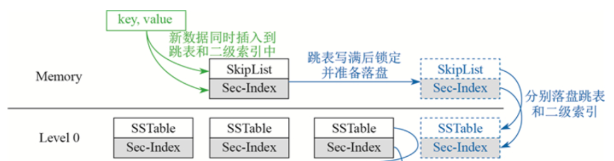
当我们index对应的memtable是写满后才刷盘的。可以假设主键对应的数据字节长度是我们index key对应的字节长度的10倍。也就是说，对于相同的数据量，我们的index开销是，比primarykey多了9次LOG IO写，但是少了9次IO刷盘操作。两者当前的IO次数相当于抵消。
但是，我们需要考虑两者的潜在性能差，我们会在序列化value的同时，序列化index对应的key，而这种方法在刷盘时还需要再次序列化一次，这种增加了cpu的cache miss。另一种情况则是，这种方法会使得level0的文件数量变得很大，就很容易触发compact操作(写放大)。
4.测试情况¶
4.1功能测试¶
Basic
- Basic.TestParse:表示是否正常序列化
- Basic.SIMPLE_KEY_FIELD:表示
TestIndex1：
- TestIndex1.QueryKeyByFieldUnderLargeInsert:在大数据下，扫描整个数据库查找对应field字段所对应的数据
- TestIndex1.TestQueryIndexInMemory ：在小数据插入下，index查询是否能正确查看memtable的值
- TestIndex1.QueryByIndexUnderLargeInsert：在大数据插入下，index查询是否能正常返回
- TestIndex1.QueryByIndexUnderDelete：在大数据插入和少量删除操作下，index查询是否正确
- TestIndex1.IndexCompaction：指定需要合并的范围，能否对index对应的数据库正确合并
TestIndex2
- TestIndex2.RangeQueryByIndexUnderLargeInsert：在大数据插入下，执行field范围查询
- TestIndex2.CreateIndexDuringInsert ：在并行写线程种，能否正确createIndex
TestMeta
- TestMeta.SimpleCreateDelete：能否正常进行createindex和deleteindex操作
TestRecovery
- TestRecovery.metaField ：meta数据能否正常恢复
- TestRecovery.recoveryAll ：在插入大量数据，建立index，能否正常恢复。
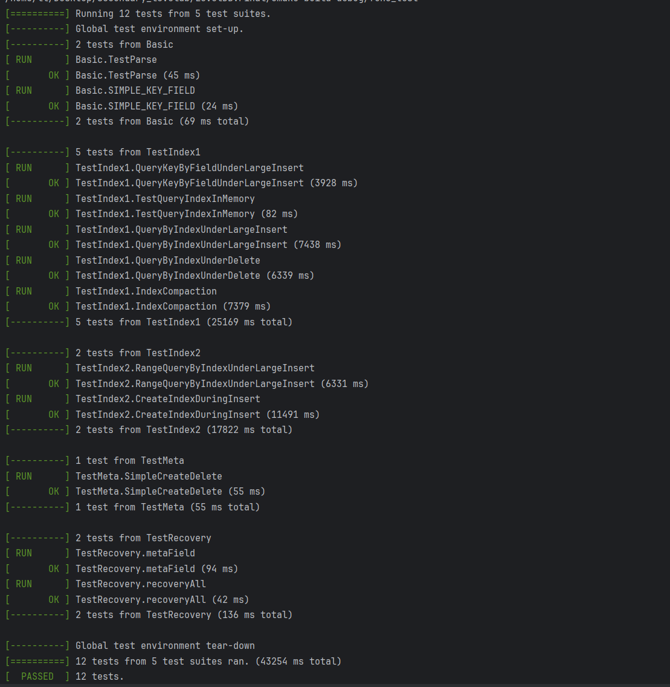
4.2性能测试¶
性能测试主要是仿照leveldb固有的bench进行修改。修改后的文件在benchmarks/db_bench_field.cc中。
它支持下述测试样例 "fillseq,"：在索引和非索引下的单线程顺序写 "fillsync,"：在索引和非索引下的单线程sync写。 "fillrandom,"：在索引和非索引情况下的单线程随机写 "readAfterCreateIndex,"：在索引创立后的随机读 "readInCreateIndex,"：在索引创建中的随机读 "writeAfterCreateIndex,"在索引创建后的随机写(这主要用于比较索引创建前后) "writeAfterDeleteIndex,"在索引删除后的随机写 "writeInCreateIndex,"在索引创建中的随机写 "writeInDeleteIndex,"在索引删除时，随机写。 "fill100K,";单线程下的大批量写
支持下述测试情况：
-
不同数据量下的性能、不同读写比例下的性能、不同键值对大小下的性能。通过修改具体的参数，我们的程序能测试各个场景下的性能情况。我们只选择了几组非常有代表性的情况作为展示（毕竟如果要把每种场景下各个实验都跑一遍要进行上百次实验，分析的价值并没有那么大）
-
其中FLAGS_num表示插入的数据量；FLAGS_reads表示可以并发的读线程，若值为负数，其并发量会自动置为FLAGS_num;FLAGS_each_field_size表示非索引部分的field值的大小；FLAGS_index_size表示二级索引的大小设置。
-
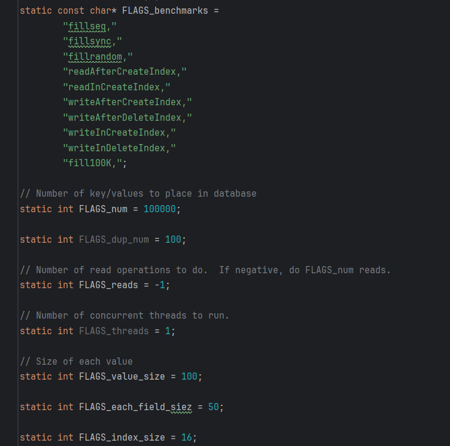
我们的机器如下
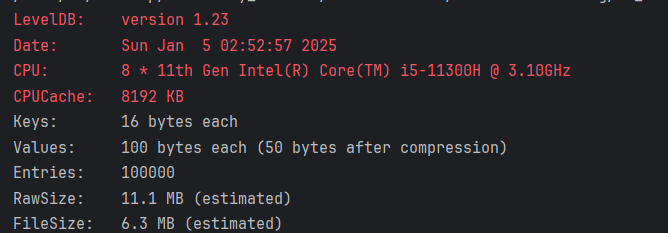
接下来我们将进行性能的比对，为了区别机器硬件对运行的影响，我们先给出原始leveldb(不做任何修改)在benchmark下的性能。
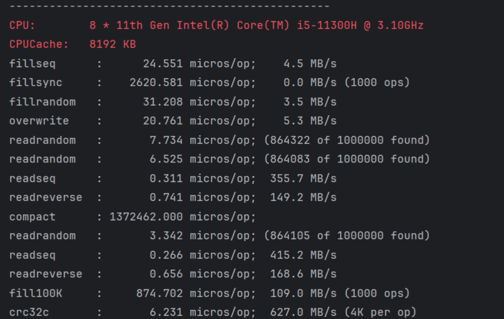
4.2.1索引的存在与否对单线程写入的影响¶
系统修改后的main_leveldb结果，这里没有进行索引的创建，可以发现性能还是比较相近的。说明我们在增加field字段的功能后，其cache miss对 ops的影响是有限的。
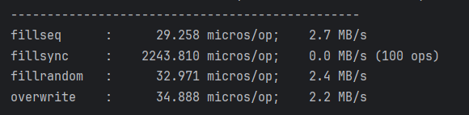
建立createIndex后的测试结果，这里包含吞吐量和延迟
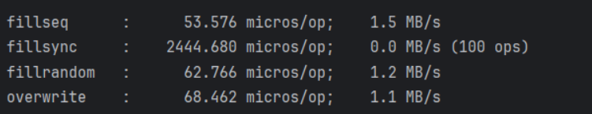
我们可以看到这里单线程的写操作(除了fiilsync)，其几乎吞吐量几乎降低了一倍，这是因为这里的主要开销都在log的维护上，因为当前有一个索引，加上要写maindb的log，要进行两次IO的写。同时我们也可以看到，就比如fillseq，P75延迟在50-60左右，而P99延迟则在43131 micros，这主要是因为在数据写入的增加，后续的写入操作很容易产生写放大，因此延迟增高。(这里的吞吐量两次测量优点不一样)
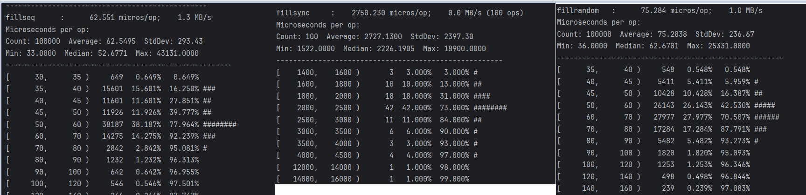
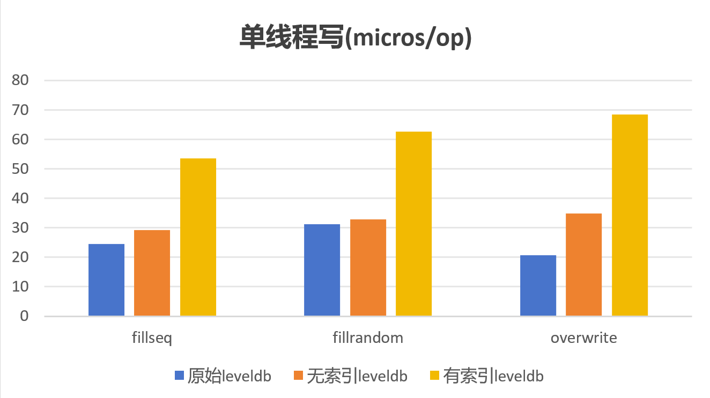
4.2.2索引创建过程中对读性能影响¶
然后我们看创建过程中读取的情况，可以发现，在创建后读取，其吞吐量是读取是创建的3倍。这里主要是因为在后期创建的时候，会阻塞与index值相关的读取操作。
但是，我们这里发现前者的P75延迟反而比后者高。后者在创建索引前，会通过扫描整个数据库的方法查找符合值。这就说明在这种情况下，走index查询的验证步骤，会耗费更多的时间。导致这种情况的原因是，我们将数据量设置为10000，但若是将数据量改为100000，索引查询将显然更快。但是因为我们的测试程序需要通过多次随机读来均摊compaction的影响的原因，会导致整个过程耗时接近半小时，很难继续其他实验。因此这两者我们将在大数据下，一次读取过程中单独比较，具体比较看FindKeysByField和QueryByIndex的比较。
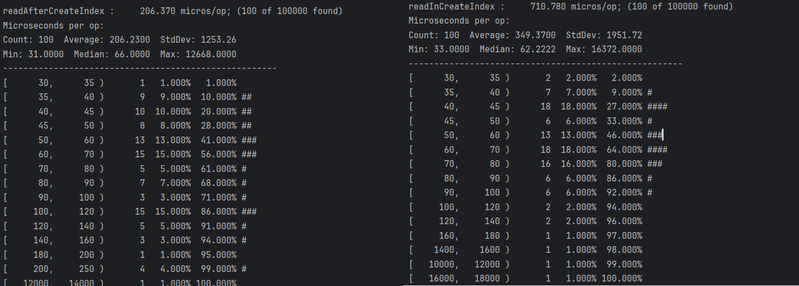
4.2.3索引创建过程中对写性能影响¶
1.可以看到两者的吞吐量差异不会像read相差那么大，这可能主要是因为，批量写可以很好的分担阻塞队列对写入性能的影响。
2.但后者吞吐量还是会低一些，是因为在新写入的数据会阻塞在进入writers队列当中。
3.然后可以发现后者的延迟情况。后者的最低延迟最低，这是因为它只写了一个log。在p75时两者比较相近，这是因为此时索引还没有完全建立。而在建立后，队列阻塞，因此后续的写入并没有立马响应P99较高，在index建立完成后，才继续写入。
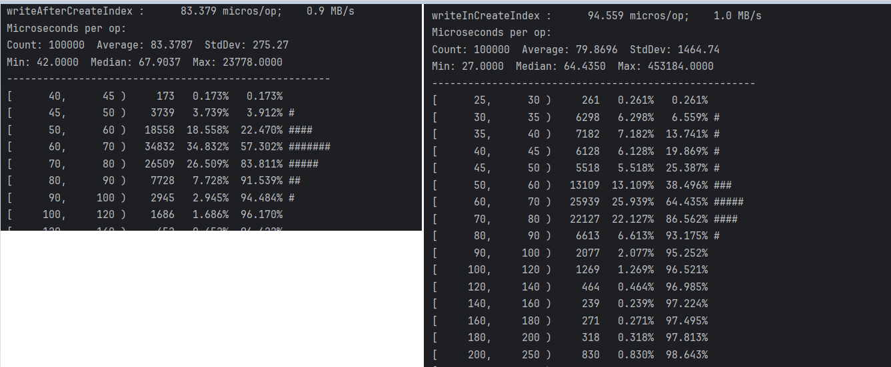
4.2.3索引删除过程中对写性能影响¶
这里是删除索引后写，与写时删除的比较。可以看到，两者的吞吐量和延迟都比较相近(没有前面read相差的那么大)。
这主要是因为我们的delete操作，仅仅只是删除元数据。而为什么偏低，是因为我们在删除元数据的时候，需要获取写锁，这就需要暂时将当前的writers队列的内容全部写入memtable，并且新的数据暂时不进入writers，因此会造成一定的性能损耗。这有点类似于pg数据库在创建索引时的准备过程，等待相关数据先全部写完，再继续操作。
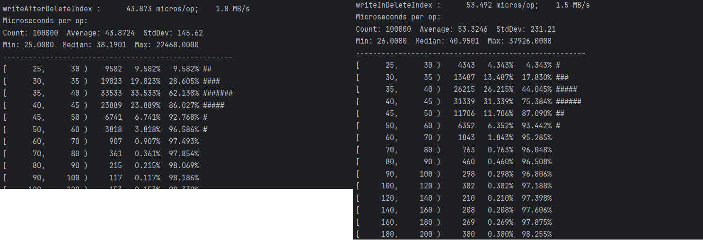
4.2.4FindKeysByField在有二级索引的情况下性能提升情况¶
根据实验要求，FindKeysByField要实现的功能是字段查询，传入字段名和字段的值就可以找到对应的key。如果没有二级索引，我们对应的功能通过MultiDB::QueryByIndex实现；如果有二级索引，我们对应的功能通过MultiDB::Get_keys_by_field实现。
吞吐量（Throughput）：每秒操作次数，单位为 OPS（operations per second）。通过迭代100000次，我们测试得到的吞吐量如下所示
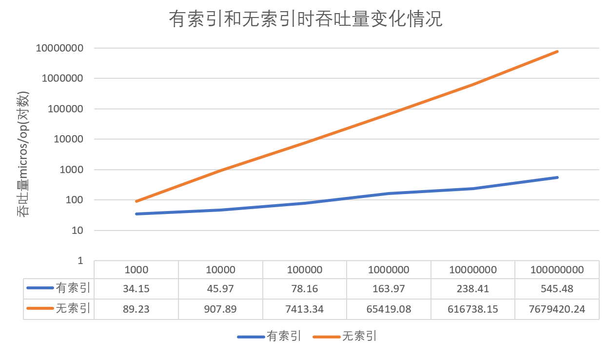
延迟（Latency）：每个操作的平均响应时间，单位为毫秒（ms）。
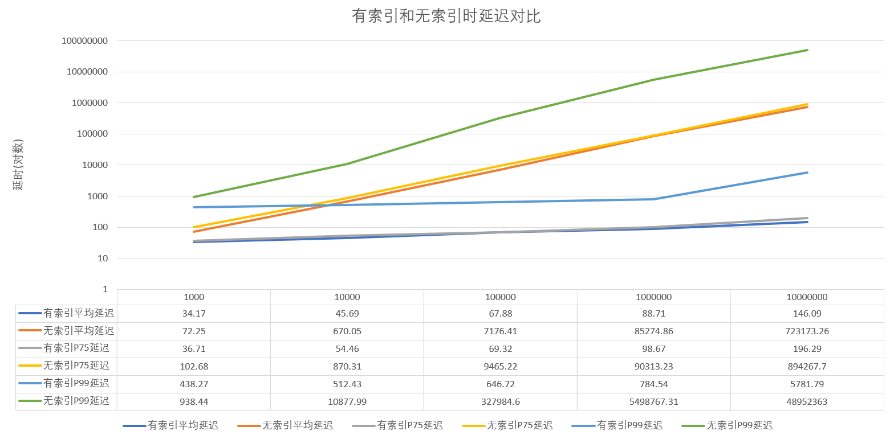
首先来看final分支，readAfterCreateIndex 和readInCreateIndex 比对，在数据量小的时候，readInCreateIndex 的吞吐量会高于readAfterCreateIndex，这是因为索引的建立时间比较后面，接近读操作结束。随着数据量的增大，在索引建立时，大量数据阻塞，等待索引建立完成，此时，readInCreateIndex的吞吐量会远低于readAfterCreateIndex。延迟的解释也类似如此。(框架上来说，是在建立索引时，不支持并发的读取索引数据) 当WriteAfterIndex和WriteInCreateIndex对比，数据量小时，两者接近，数据量增大时，WriteInCreateIndex的延迟p99，p75将远大于前者，并且是剧烈增加。解释同上，是因为没有支持并发写。
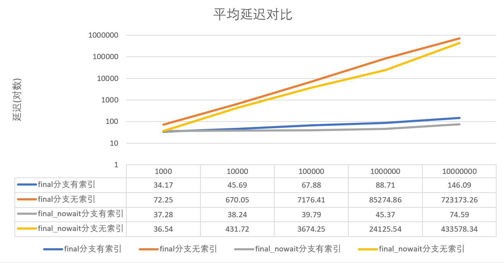
其次再来看final_nowait分支，对于final_nowait分支只需要比较WriteAfterIndex和WriteInCreateIndex，这里应该有四条曲线，对应final分支的WriteAfterIndex和WriteInCreateIndex的实现的数据，以及final_nowait分支的数据。 因为此分支支持在创建索引的过程中，并发写入新的数据，因此，final_nowait分支上WriteAfterIndex和WriteInCreateIndex会比较接近。甚至，在数据量不是那么大的情况下，WriteInCreateIndex还会比WriteAfterIndex的延迟更低，这主要是因为我们在WriteAfterIndex中，数据是以batchsize为1写入的，而在WriteInCreateIndex过程中，index对应的数据会以batch形式临时存储，然后批量写入。 而后续WriteAfterIndex比WriteInCreateIndex的延迟更低，这是因为由于索引数据一直存放在临时batch中，数据迟迟没有写入，其等待的时间开销大于批量写的性能优化，因此WriteInCreateIndex的延迟变高。
4.2.5写放大展示¶
写放大（Write amplification）：合并在磁盘上总的写入开销，单位（GB），这主要针对写入操作。我们的想法是随机生成足够多的数据（否则不进行compact数据库就被删除了，无法直观感受，因此生成了300000条），然后通过相应的写入来衡量写入开销。
运行的结果如下所示。在testdb_write数据库的 LOG 文件中，可以看到这种情况下Compact了两次：
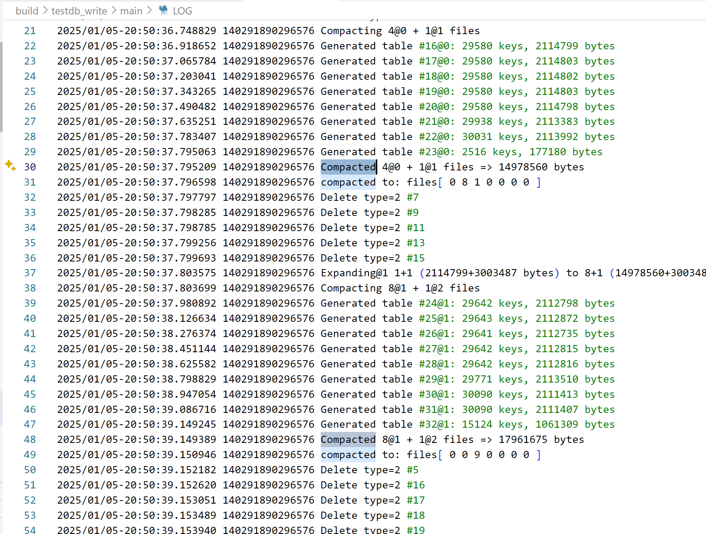
可以看到第一次合并的写放大为14978560字节，第二次为17961675字节，两次总计写放大为32940235字节
4.2.6索引的存在与否对多线程写入的影响¶
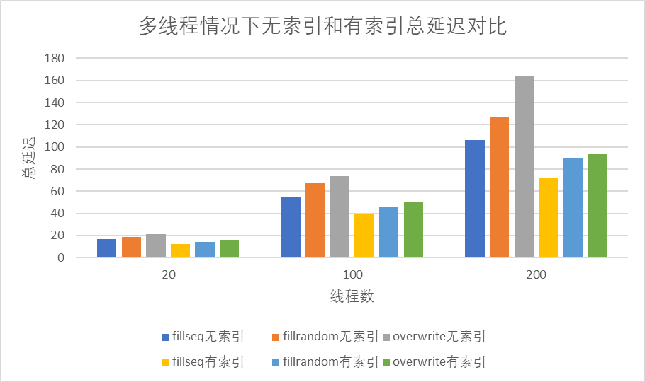
我们选择总延迟作为多线程情况下对比的依据。总延迟随着线程数增加而增加，高线程数有更高的开销，也会对系统整体的稳定性产生不利影响。但是对比可以发现，即便有上述不利因素，有索引也起着一定的正向作用。
5其他已经实现的思路(final_nowait分支)¶
5.1nowait写¶
我们发现若是要保证index重建过程中的快速恢复，需要牺牲createindex时的写的性能，因此我们这里新推出了一种实现方法，能够在createindex的过程中高效的write。
我们可以先看结果，这里只有并发写的性能与前面的有所区别。
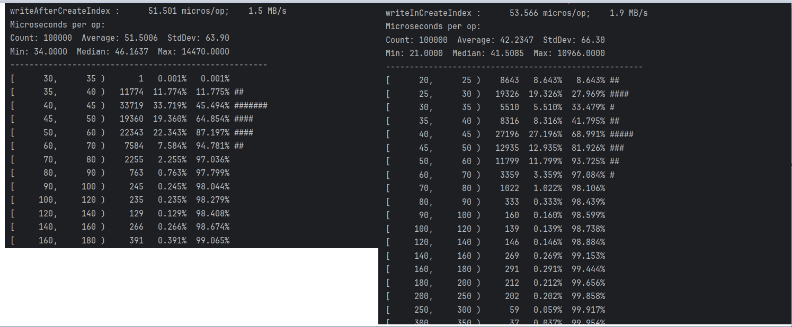
延迟的表现反而更好，前者的p75在50-60之间，后者的p75在45-50之间。前者的p99在160左右，后者则在140左右。
这主要是因为，对于第一个put操作，它是以每一条数据为单位，然后写入两个数据库；而对于后者，它在建立index时，对于新的写入数据，最后都是以batch形式写入的，说明批量操作更快。
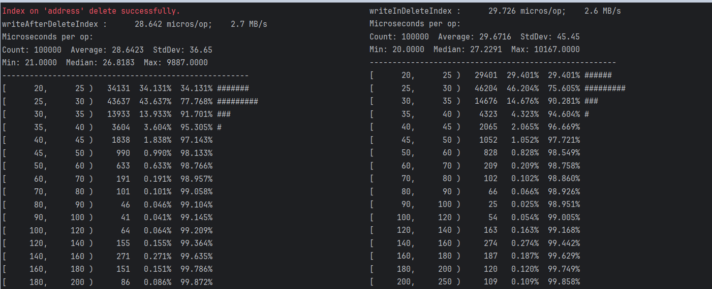
我们可以看到在createIndex的过程中，写的性能几乎不会受到影响。接下来我们来讲述其具体实现。
我们在multi_db.h中新增对象
std::vector<std::string> new_index_field_;//用来存储当前正在创建的对象
MultiWriteBatch *tmp_index_batch_;//用来临时存放需要输入到新的indexdb的新输入的数据，
然后对于put_with_field，提前释放读锁,,而不是等到write函数结束后才释放，然后当!new_index_field_.empty()时，意味着当前正在创建新的数据库，对于其数据，我们将它放入tmp_index_batch_中，然后继续正常的将其他数据输入到maindb或者其他index数据库。
meta_lock_.ReadLock();
std::unordered_set<int> match;
for (int i = 0; i < fields.size(); i++) {
for (const auto& entry : index_db_mp_) {
const auto& i_name = entry.first; // 字段名称
if (fields[i].first == i_name) {
// 存储字段 i 和对应的数据库
match.insert(i);
break;
}
}
}
Status s;
MultiWriteBatch multi_batch;
for(auto &idx_pos : match){
//item entry: <index positon in fields,>
std::string composed_key;
BuildComposedKey(key,fields[idx_pos].second,&composed_key);
if(!new_index_field_.empty() && (fields[idx_pos].first.ToString() == new_index_field_[0])){
tmp_index_batch_->Put(composed_key,Slice(),fields[idx_pos].first.ToString());
}else{
multi_batch.Put(composed_key,Slice(),fields[idx_pos].first.ToString());
}
}
meta_lock_.ReadUnlock();
Write()
然后对于createindex，也提前释放锁
Status MultiDB::CreateIndexOnField(const std::string &field_name) {
//meta_lock_.WriteLock();
WriteLockGuard l_meta(&meta_lock_);
MutexLock l(&mutex_);
this->db_status_ = DBStatus::CreatingIndex;
//assert(writers_.empty());
//WriteLockGuard l_meta(&meta_lock_);//主要针对PutwithField操作能够解析完整的multi_batch
//assert(0);
for (const auto& field_pair : this->index_db_mp_) {
if (field_pair.first == field_name) {
return Status::InvalidArgument(field_name,"Index already exists for this field");
}
}
//元数据持久化
//..............
new_index_field_.push_back(field_name);
meta_lock_.WriteUnlock();
ReadOptions read_op;
read_op.snapshot = main_db_->GetSnapshot();//保证该快照内的数据不会被main_db gc掉，读取不超过该seq的数据到index_db中，支持无锁并发
//已经这里获得快照时会获取到锁
auto it=main_db_->NewIterator(read_op);
//meta_lock_.WriteUnlock();//此时put_with_fields也会准备写入writers
mutex_.Unlock();//现在保证了接下来的最新数据可以进入到writers队列
WriteBatch batch;
//.....得到需要写的batch
main_db_->ReleaseSnapshot(read_op.snapshot);
field_db_impl->Write(WriteOptions(),&batch);//表示原来的数据已经写完，这里批量写加快写速度
//将tmpbatch写完，
meta_lock_.WriteLock();
new_index_field_.clear();
meta_lock_.WriteUnlock();
tmp_index_batch_->s = BatchStatus::ForIndexCreate;
if(!tmp_index_batch_->index_batch_map_.empty()){
status = Write(WriteOptions(),tmp_index_batch_);//这里开始把新输入的数据写到新建的indexdb中，保证了新的数据是在maindb对应的数据库之后的
}
std::string meta_key_done;
PackageIndexStatus(IndexStatus::DoneCreate,field_name,&meta_key_done);
std::string delete_key_done;
PackageIndexStatus(IndexStatus::DoneDelete,field_name,&delete_key_done);
WriteBatch meta_batch;
meta_batch.Put(meta_key_done,Slice());
meta_batch.Delete(meta_key_create);
meta_batch.Delete(delete_key_done);
meta_db_->Write(WriteOptions(),&meta_batch);//表示已经更新完成
return status;
}
同时若出现index创建过程数据库崩溃，它需要遍历主数据库恢复。把原来的iter.Seek(target)改为iter.seekFirst()
5.2只记录一个日志来保证持久化¶
实际上我们可以发现，这里index log的主要作用是用于建立索引时崩溃恢复。若我们接受可以在createIndex崩溃时，需要重新扫描整个数据库的话，我们可以有下述操作。
我们只需要记录maindb对应的log，因为indexdb的数据实际上可以从当前log中解析出来。但是需要注意leveldb中的void DBImpl::RemoveObsoleteFiles() 函数，它会自主删除过期数据，对于log数据是否过期的判断如下
for (std::string& filename : filenames) {
if (ParseFileName(filename, &number, &type)) {
bool keep = true;
switch (type) {
case kLogFile:
keep = ((number >= versions_->LogNumber()) ||
(number == versions_->PrevLogNumber()));
break;
它是根据maindb的version的lognumber判断的。但是我们会发现 versions_->LogNumber()会在MakeRoomForWrite函数中更新，也就是每一次刷盘，都会更新lognumber。这就会导致一种情况，有可能maindb的memtable刷盘后，认为该对应的log文件过期，就会删除。但实际上，在相同数据下，indexdb的memtable刷盘速度是慢于maindb的(因为key很小)。这就会造成indexdb所对应的log文件将会被删除，若此时数据库崩溃，则无法正常恢复，两个数据库之间的数据将不一致。
因此我们这里提出全局log日志记录方式，maindb的对应log将不再放入maindb的目录下，而是放在一个新建的LOG目录下。然后在调用RemoveObsoleteFiles时，单独对log进行处理,代码如下
//相当于log单独领出来
std::vector<std::string> logfiles_to_delete;
for(auto & logfile_name : log_file_names){
if (ParseFileName(logfile_name, &number, &type)){
assert(type == kLogFile);
bool keep = true;
keep = ((number >= versions_->LogNumber()) ||
(number == versions_->PrevLogNumber()));
if (!keep) {
global_log_file_manager.RemoveLogReference(number);//这里不马上删除，而是对该文件的引用减1
Log(options_.info_log, "Delete type=%d #%lld\n", static_cast<int>(type),
static_cast<unsigned long long>(number));
}
}
}
global_log_file_manager是一个全局变量，用于管理文件的引用数，管理文件号，并且管理什么时候删除对应的log文件。当reference减到1时，开始删除文件。
namespace leveldb{
class LogFileManager {
public:
// struct LogFileInfo {
// uint64_t log_number;
// std::string log_dir; // 日志文件所在的目录
// int ref_count; // 引用计数
// };
void AddLogReference(uint64_t log_number);
void AddLogReference(uint64_t log_number,uint64_t count);
bool RemoveLogReference(uint64_t log_number);
void unLock();
void Lock();
void clear();
uint64_t getNewLogNumber() const;
void setNewLogNumber(uint64_t newLogNumber);
std::string log_dir;
std::vector<uint64_t> log_to_delete_;
std::atomic<uint64_t > new_log_number;//只在maindb中修改，在其他db中读取
bool is_update_to_indexes_;
private:
port::Mutex mutex_;
std::unordered_map<uint64_t , uint64_t> log_files_;//表示 <log_number,ref count>
std::unordered_set<uint64_t> new_log;//在index刷盘前产生了多少个
};
// 声明全局 LogFileManager 实例
extern LogFileManager global_log_file_manager;
}
然后我们看它是如何更新的，实际上它也是在MakeRoomForWrite中更新，这里options_.abandon_log表示是否启用log文件，global_log_file_manager.log_dir表示其目录地址，这是在初始化数据库时确定的。
uint64_t new_log_number;
WritableFile *lfile = nullptr;
if(!this->options_.abandon_log) {
new_log_number = versions_->NewFileNumber();
s = env_->NewWritableFile(LogFileName(global_log_file_manager.log_dir, new_log_number), &lfile);//TODO
global_log_file_manager.new_log_number = new_log_number;
}
然后我们看它是如何恢复index的数据，获取到log file内的一个batch后，就可以重新写成idnexdb接受的batch内容。
if(this->is_index){//表示该数据库存储index数据
WriteBatch new_batch;
auto index_name = ExtractFieldName(this->dbname_);
WriteBatchInternal::RewriteBatchForIndex(batch,&new_batch,index_name);//这里的batch为maindb内的内容，new_batch为解析后的index_batch,可以写入index数据库
}else{
WriteBatchInternal::SetContents(&batch, record);
}
void WriteBatchInternal::RewriteBatchForIndex(WriteBatch * old_batch, WriteBatch *new_batch,
const std::string& field_name) {
class RewriteHandler : public WriteBatch::Handler {
public:
RewriteHandler(WriteBatch* batch, std::string field_name)
: batch_(batch), field_name_(std::move(field_name)) {}
void Put(const Slice& key, const Slice& value) override {
std::string composed_key;
auto field_val = ExtractFieldValByName(value,field_name_);
if(!field_val.empty()){
BuildComposedKey(key, field_val, &composed_key);
batch_->Put(composed_key, value); // 将组合键和原始值添加到新批处理
}
}
void Delete(const Slice& key) override {
//不做任何事情
}
private:
Slice ExtractFieldValByName(const Slice& value,const std::string& field_name){
//...................
return Slice();
}
WriteBatch* batch_;
const std::string field_name_;
};
RewriteHandler handler(new_batch, field_name);
old_batch->Iterate(&handler); // 遍历旧批处理并重构到新批处理
}
全局log的性能：
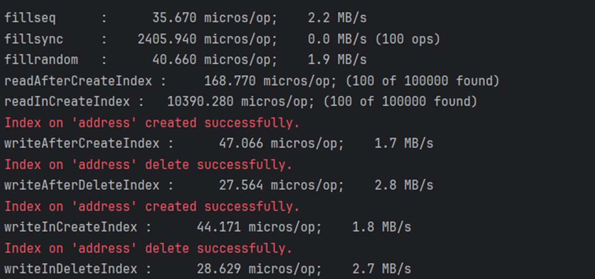
可以发现写入的性能明显比之前加快了。这里的writerInCreateIndex也是随机写，可以发现与fillrandom性能将比较接近。
6待实现的优化¶
6.1数据的验证¶
我们在验证时，是根据值是否相等判断它是否过期的。实际上，我们最好是根据sequence判断。但是，我们是很难做到两个数据库的sequece完全一致的。难点如下，存在maindb建立后插入索引的情况，这样就需要读取maindb对应的数据的sequence，然后手动对version设置sequence，也因为每一条数据的sequence不一定相等，因此无法进行批量写，性能堪忧。
因此，我们提出了以空间换时间的写法，原先的设计下，index的key值为 val_len|value|p_key，我们可以进一步修改为 val_len|value|p_key|p_sequence,这样每一次除了记录实际数据，还会记录sequence用来加速validate操作。
具体操作则是，对于其sequence，传给ReadOptions操作，告知不能读取超过该sequence的数据。
/**
*
* @param long_val 从maindb中读取到的完整的value
* @param field <字段名,字段值>
* @return
*/
bool MultiDB::Validate(const std::string &long_val, const Field &field) {
//TODO 这里根据parse value来判断是否正确,更好的做法，是根据sequence判断
//根据sequence判断的前提：两个数据库对应数据的seq一致性，还未完成
if(long_val.empty())return false;//可能空的原因之一：读不到delete，因为已经全部gc处理了。什么值都没读到。
auto slice = Slice(long_val.c_str());
uint32_t size;
GetVarint32(&slice,&size);
//GetVarint32(&slice,&index_num);
for(int i = 0; i < size;i++){
Slice val_name;
Slice val;
assert(GetLengthPrefixedSlice(&slice,&val_name));
assert(GetLengthPrefixedSlice(&slice,&val));
if(val_name == field.first){
return val == field.second.ToString();
}
}
return false;
}
6.2batch细粒度写¶
我们对于在createindex过程的非阻塞写，实现中，比较粗暴的把数据放到一个batch内，然后统一write，这样过于暴力，后续可以先进行一个大小的粗粒度的判断，然后决定是不是要先写一部分。
在读取未命中的数据，然后indexdb内写delete信息时，可以是异步进行的，这样就可以不用增加在未命中数据时，read的延迟。并且该部分也可以不进行log记录，可以加快写入速度。带来的影响则是，在数据库崩溃后，不命中的数据不会删除，还会有人读到过期数据，增加该次操作的读延迟。